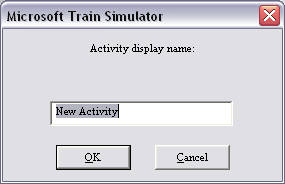
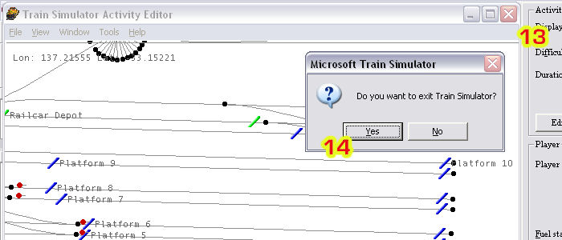

Click Start | MSTS Editors and Tools | Activity Editor.
Click File | New
Select the route you wish to use from the drop-down box:
A new window appears: click "ok" (we won't be saving this activity anyway):

You may see a message such as this - ignore it for now, click "Yes"
The main activity editor screens open. Click on the "New" button under "Player Service" on the right hand side of the screen (arrow #1).
A new window, entitled "Service editor" pops up on the left side of the screen.
Click on the "NEW" button underneath path.
Two similar windows will appear one after the other: the first is the filename that you will see in the "Paths" folder, the second is the Path name as displayed in MSTS:
Ok, now we're getting to the "duck's guts"!
I've moved these windows for the purpose of the screenshot, but here you'll see that MSTS has filled in your display name (#3) from above. Fill in a name for your starting location (#4) and ending location (#5) point. The route behind is a jumbled mess. You can navigate in the map display: zoom in or out by using the magnifying glass buttons (#6) or with the mouse by right-click-and-drag up to zoom in, down to zoom out; left/right/up/down by using the arrows in the TOOLS window (though they're counter-intuitive - the route moves in the opposite way to the arrow) or with the mouse by by left-click-and-dragging on the map display.
Now this is IMPORTANT: DO NOT UNDER ANY CIRCUMSTANCES DRAG the Path Editor window completely off the map display - it will disappear underneath the activity window and you will not be able to exit the Path Editor nor quit MSTS Activity Editor by any other means than a Ctrl-Alt-Delete.
You can move the TOOLS window (arrow #8), but make sure you leave some of the Path Editor window showing (arrow #9).
If you do lose the Path Editor window, you will see this when you attempt to quit MSTS..........
...... and the only way out is a Ctrl-Alt-Delete which may damage your route (I haven't damaged anything, but it's not wise to tempt fate: it seems that MSTS's tools have a {devilish} mind of their own sometimes).
Let's keep going.
Zoom in and move the map display till you get to the area you wish to place your starting location - here I've picked Port Dock Platform 1. Place the cursor over the track where you want the end of the train to be: a circle will appear, right-click and select "Place Start Point.", thus:
When you place the Start Point, the circle that was the cursor fills with blue, the path runs out in green and the End Point is a filled blue circle lined in red. If the path projects the wrong way (as in the example below), simply right-click on the Start Point and "Toggle Start Direction".
Now the path projects off the map display. You can follow this green line as it takes the default path through each set of points and see where it ends up - here at Adelaide Station in Platform 6: if you do nothing except drive from Port Dock, this is where you will end up.
Of course, if you set this path up only to give yourself another Start Point to explore your route, you can press "G" at any set of points to explore other parts of the route.
In the image above, I've expanded the End Location by adding "Platform 6" to "Adelaide".
Now click on "Leave Path Editor" (#10), then answer "Yes" to Save Changes.
Click "Cancel" (# 12) to quit the Service Editor.
Click on the "Close Window" icon (# 13) and answer "Yes" (# 14) to quit MSTS Tools.

Now open MSTS, select your route (#15), select your locomotive (#16):
Select your consist (# 17), select your new Start Point (#18), then Press Start (# 20):
And here you are, ready to explore at your new Start Point:

Hope this helps.